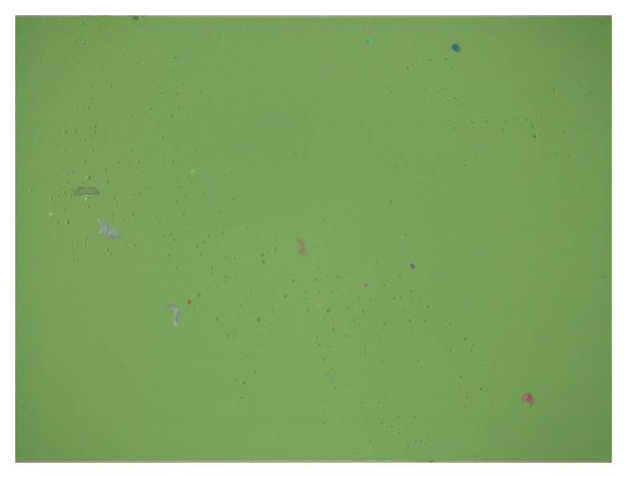

image_filename = "../sample-code/ad2_f29.JPG"
image_filename'../sample-code/ad2_f29.JPG'This example was created by converting the code provided by Alina into a quarto QMD file.
Here is the image that will be processed:
#Segment Anything Model
#Alina Zaidi
#imports
import sys
import cv2
import time
import torch
import torchvision
import platform
import numpy as np
import matplotlib.pyplot as plt
#sys.path.append("..")
from pathlib import Path
from segment_anything import sam_model_registry, SamAutomaticMaskGenerator, SamPredictor
print("PyTorch version:", torch.__version__)
print("Torchvision version:", torchvision.__version__)
print("CUDA is available:", torch.cuda.is_available())PyTorch version: 2.8.0+cpu
Torchvision version: 0.23.0+cpu
CUDA is available: False#Upload image and modify for model
image_filename = "../sample-code/ad2_f29.JPG"
image_filename = Path( image_filename )
if not image_filename.is_file():
print(f"{image_filename} does not exist")
sys.exit(1)
original_image = cv2.imread( image_filename ) #change to match file name
print(original_image.shape)(1944, 2592, 3)Swap RGB channels in preparation for the model.
if torch.cuda.is_available():
cc_major, cc_minor = torch.cuda.get_device_capability(0)
if cc_major < 7: # unsupported by current PyTorch build
print(f"GPU {torch.cuda.get_device_name(0)} (compute capability {cc_major}.{cc_minor})\n"
f"is not supported by this PyTorch build. Falling back to CPU.")
device = torch.device("cpu")
print("Using CPU")
print("CPU info:", platform.processor())
print("Machine type:", platform.machine())
print("Platform:", platform.platform())
else:
device = torch.device("cuda:0")
print(f"Using GPU: {torch.cuda.get_device_name(0)}")
else:
device = torch.device("cpu")
print("Using CPU")
print("CPU info:", platform.processor())
print("Machine type:", platform.machine())
print("Platform:", platform.platform())Using CPU
CPU info: Intel64 Family 6 Model 151 Stepping 2, GenuineIntel
Machine type: AMD64
Platform: Windows-10-10.0.26200-SP0This model is obtained from the Meta.
#what sam model to use (see their github for diff options, but b is the smallest one = less crashing)
sam_checkpoint = "sam_vit_b_01ec64.pth"
model_type = "vit_b"
#added print statements to check due to previous crashing issues
try:
sam = sam_model_registry[model_type](checkpoint=sam_checkpoint)
print("YUP all loaded")
except Exception as e:
print("NOPE not loaded")YUP all loadedsam.to(device=device)
#Below are parameters that seem to be good for chaing min size allowed, how detailed the model looks for masks, etc
#There are several tunable parameters in automatic mask generation that control
# how densely points are sampled and what the thresholds are for removing low
# quality or duplicate masks. Additionally, generation can be automatically
# run on crops of the image to get improved performance on smaller objects,
# and post-processing can remove stray pixels and holes.
# Here is an example configuration that samples more masks:
#https://github.com/facebookresearch/segment-anything/blob/9e1eb9fdbc4bca4cd0d948b8ae7fe505d9f4ebc7/segment_anything/automatic_mask_generator.py#L35
#Rerun the following with a few settings, ex. 0.86 & 0.9 for iou_thresh
# and 0.92 and 0.96 for score_thresh
mask_generator_ = SamAutomaticMaskGenerator(
model=sam,
points_per_side=32,
pred_iou_thresh=0.9,
stability_score_thresh=0.96,
crop_n_layers=1,
crop_n_points_downscale_factor=2,
min_mask_region_area=100, # Requires open-cv to run post-processing
)Apply the defined mask generator to process the image.
This a very expensive (time consuming) process.
Using the masks created above, plot the segments/cells.
def show_anns(anns):
# Function to loop over segments identified and display them on plot
if len(anns) == 0:
return
sorted_anns = sorted(anns, key=(lambda x: x['area']), reverse=True)
ax = plt.gca()
ax.set_autoscale_on(False)
polygons = []
color = []
for ann in sorted_anns:
m = ann['segmentation']
img = np.ones((m.shape[0], m.shape[1], 3))
color_mask = np.random.random((1, 3)).tolist()[0]
for i in range(3):
img[:,:,i] = color_mask[i]
ax.imshow(np.dstack((img, m*0.35)))
#output the image with colors for the masks
plt.figure(figsize=(5,5))
plt.imshow(image)
show_anns(masks)
plt.axis('off')
plt.show() 
#analysis
total_areas = [] #initialize the array
for mask in masks:
#check if the mask is a bubble
if mask["area"] > 350:
# add non-bubble masks to the array
total_areas.append(mask["area"])
#remove the background element
del total_areas[0]
#convert to a numpy array
total_areas = np.array(total_areas)
#sort the array from least to greatest (just easier to look at)
total_areas.sort()
for area in total_areas:
print(area)511
588
1023
2224
3194
3438
3772
4221
4988688We’ll identify cells based on cell size (area)
#Attempt to find overall cell type based on mean of cell area
if mean_area >= 10000:
print("buccal cells")
elif mean_area <2500:
print("touch cells")
elif mean_area >=2500 and mean_area < 10000:
print("saliva cells")
# how many of each type
buccalCount = 0
touchCount = 0
salivaCount = 0
for area in total_areas:
if area >= 10000:
buccalCount +=1
elif area <2500:
touchCount +=1
elif area >=2500 and area < 10000:
salivaCount +=1
print(f"""
There are:
{buccalCount} buccal cells,
{touchCount} touch cells, and
{salivaCount} saliva cells
""")buccal cells
There are:
1 buccal cells,
4 touch cells, and
4 saliva cells